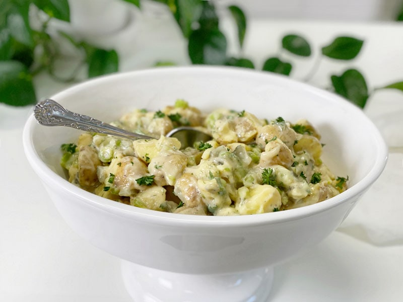
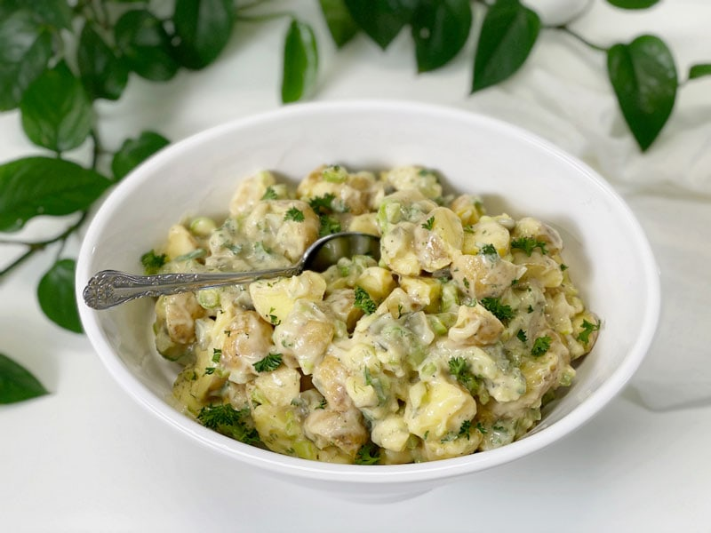
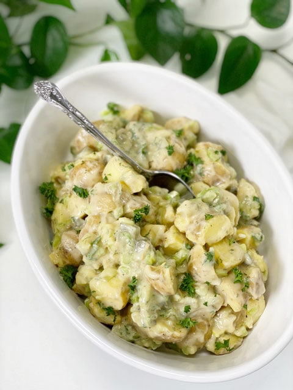
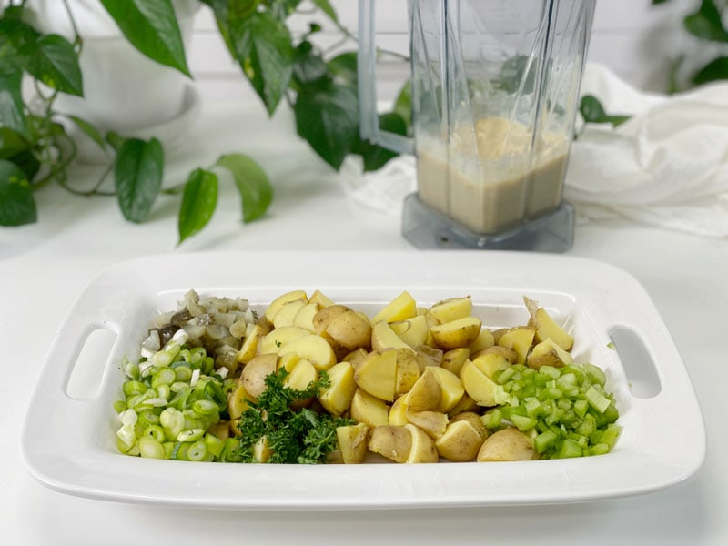

Chunky Potato Salad | Oil-Free
I would love to name this recipe “Mama’s Potato Salad,” but that just isn’t the case. Mom is well known for her potato salad; in fact, it’s a strong bartering chip between her and my Uncle Lonnie. He’s more than happy to plow her driveway, cut the grass, or help with some mechanical issue if there is a pot of potato salad at the end of the rainbow.

But unfortunately, I stopped eating her potato salad more than a decade ago because she uses dairy in it. There are ways to modify, but Mom doesn’t deviate from HER recipe. So for the past ten years, I have enjoyed staring at it till I drool. On the flip side, I am thrilled to say that I found a delicious and more nutritious version of her potato salad (please don’t tattle on me). The recipe goes together quickly and will have you licking the bowl (so be sure to use a big enough one to clear your chin). Let’s dive in, shall we?
Ingredients for This Recipe
Pickles and Brine
- The pickles are a double-duty ingredient here. There are chopped pickles in the salad and pickle brine in the dressing.
- You can use diced sweet pickles, dill pickles, or pickle relish…whatever floats your boat. I used dill pickles.
- I don’t recommend leaving them out, as they give this salad another layer of zing.
Know Your Potatoes
Since potatoes are the star of the show in this recipe, we are going to cover some very important information. First off, the type of potato matters. Waxy is better than starchy when it comes to potato salad.
- Waxy: These are thin-skinned potatoes that have the least amount of starch and retain their shape well when boiled. Thin skins also mean that peeling is optional if you’re short on time or like a more rustic salad. Use red, new, or fingerling potatoes.
- In-Between: Also known as all-purpose potatoes, these have more starch than waxy potatoes, but will generally work well in most potato salad. Use Yukon golds, or whites. Yukon golds absorb the dressing well, which prevents a watery salad after it sits in the fridge.
- Starchy: For potato salad, you’ll want to stay away from starchy, thick-skinned potatoes like russets, which will fall apart during the cooking process. A good example is russet potatoes.
How to Buy and Store Potatoes for Potato Salad
Now that you know what kind of potatoes to get, here are things to keep in mind when buying and storing them.
- Choose small potatoes for the best flavor, and try to find ones that are all about the same size so that they all cook evenly in the same amount of time. If you are using larger potatoes and have to cut them, then that doesn’t matter.
- Don’t choose potatoes that have sprouted or are wrinkly and seem dried out. Stay away from any potatoes that have a greenish tone to them, since that’s a sign that they’ve been exposed to too much light and will taste bitter.
- Once you get the potatoes home, make sure they’re completely dry, then store them in a brown paper bag in a cool, dark, place for up to a few weeks.
- For more information, click (here).

How to Avoid Watery Potato Salad
- Use the correct potato.
- Don’t add the creamy dressing until the potatoes have thoroughly cooled. Potatoes will sweat as they cool, and that can contribute to watery potato salad.
- Refrain from adding salt to the potatoes during cooking, as it makes the potatoes seep water.
Make a Day Ahead
If possible, make the potato salad a day in advance. Allowing the potato salad flavors to meld is important here. Of course, this isn’t mandatory and it does taste wonderful the day of, but anytime a dish can rest for a bit…well, like me, it improves with age.
Make Every Bite Count
Start with organic potatoes.
- According to the USDA’s Pesticide Data Program, 35 different pesticides have been found on conventional potatoes. Out of these: 6 are known or probably carcinogens, 12 are suspected hormone disruptors, 7 are neurotoxins, and 6 are developmental or reproductive toxins.
- As a root vegetable, they absorb all of the pesticides, herbicides, and insecticides that are sprayed above the ground and then eventually make their way into the soil. With potatoes, however, the chemical treatment is quite extensive. During the growing season, they get treated with fungicides. Before harvesting, they get sprayed with herbicides to kill off the fibrous vines. After being dug up, they get sprayed again to prevent them from sprouting.
Steam, rather than boiling them.
- Since a potato’s nutrients are water-soluble, they WILL leach out of the boiled potato and into the cooking water, which is usually discarded. Steaming them removes far fewer nutrients, which will leave the potato more vitamin-filled. For more added nutrients, keep the skins on.
Eat slowly until about 80% full.
- Your stomach can expand quite a bit to accommodate your overeating of large quantities of food, which isn’t healthy when continually repeated. You need to learn to eat slowly and only until your stomach is about 75-80% full. Let your digestion rest, and if you still fill hungry 30+ minutes later, eat a little bit more. Soon you will have a better understanding of what “full” means.

Ingredients
Yields 6 cups
Potato Base
- 6 medium (635 g) Yukon gold potatoes, steamed
- 1/2 cup diced dill pickles
- 1/2 cup celery, finely chopped
- 1/2 cup diced green onions, including the greens
- 1/2 tsp dried dill
- 1 Tbsp chopped fresh parsley
Potato Salad Dressing
- 1 medium (165 g) potato, peeled and steamed
- 1/2 cup white beans
- 1/2 cup brine from pickles
- 1 Tbsp dijon mustard
- 1 tsp sea salt (optional)
- 1/4 tsp black pepper
Preparation
Potato Steaming Options
Option 1 -Steam Method | Stove Top
- Scrub and rough chop the potatoes into uniform-bite-sized pieces, so they cook evenly and have a good mouth-feel. Place in a steamer basket.
- I used Yukon golds and left their skins on since they are so thin and have extra nutrition in them. They were also very small, so I cooked them whole and cut them into quarters when they cooled off.
- Add about one inch of water to a large pot and bring to a boil.
- Once the water comes to a boil, place the loaded steamer basket into the pot.
- Turn the heat to medium and let steam until fork-tender, roughly 20 to 30 minutes. Be careful that you don’t overcook the potatoes, or the potato salad will get mushy (unless you like that!).
- Using a slotted spoon or a strainer, transfer the cooked potatoes to a baking tray or cutting board so they can cool.
Option 2 – Steam Method | Instant Pot
- Scrub and rough chop the potatoes into uniform-bite-sized pieces, so they cook evenly and have a good mouth-feel. Place in a steamer basket.
- I used Yukon golds and left their skins on, since they are so thin and have extra nutrition in them. They were also very small, so I cooked them whole and cut them into quarters when they cooled off.
- Add 2 cups of water to the Instant Pot and place the loaded steam basket in the pot.
- You don’t want the potatoes sitting in too much water. If using a 6-quart unit, use only 1 cup of water.
-
Attach and secure the lid and turn the pressure valve to the “Sealing” position.
-
Press “Manual,” place on high pressure, and adjust the cooking time for 7 minutes.
-
When machine beeps, do a quick release by turning the valve to the “Venting” position. Be very careful of the steam shooting out of the valve.
Sauce
- Once the potatoes are cooled, cut them into bite-size pieces. Set aside.
- In a blender combine the potatoes, white beans, pickle brine, mustard, salt, and pepper. Blend until creamy.
- I used cannellini beans and also left the skins on the potatoes.
Assembly
- Place the thoroughly cooled, diced potatoes in a large mixing bowl. Add the pickles, celery, green onions, dill, black pepper, and parsley. Pour the sauce over top and gently fold together.
- Store leftovers in the fridge for up to 3-4 days.

© AmieSue.com